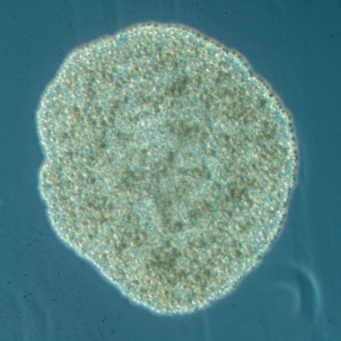
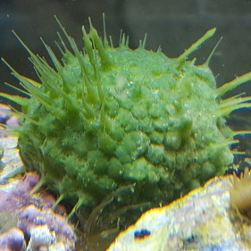
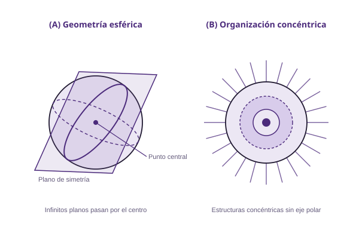
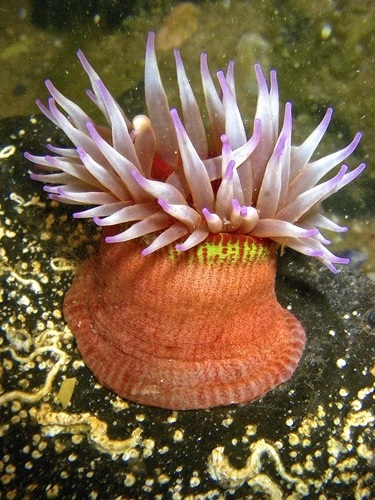
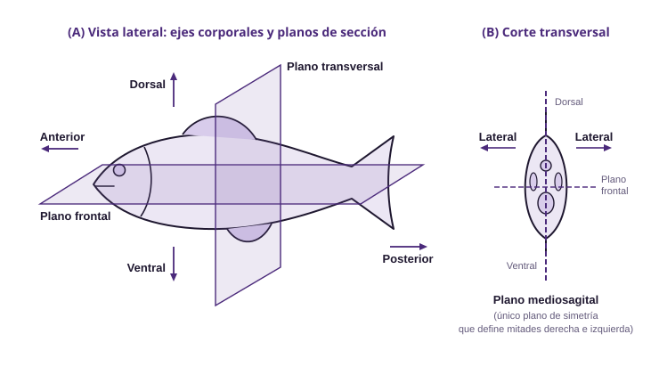

Objetivos de aprendizaje
- Diferenciar los principales tipos de simetría corporal (asimetría, esférica, radial y bilateral) y reconocer sus ejes y planos anatómicos asociados.
- Relacionar las capas germinales primarias (ectodermo, mesodermo y endodermo) con los tejidos, órganos y cavidades internas principales en los metazoos triploblásticos.
- Comparar la organización estructural de los grados acelomado, blastocelomado y celomado.
La arquitectura de los animales corporales se conoce como bauplan o plan corporal. A pesar de la gran diversidad de planes corporales en el reino animal, existen limitaciones a las clases de estructuras que un animal puede exhibir, las cuales son dictadas tanto por las leyes de la física como por las tareas que deben completar los organismos para sobrevivir y reproducirse. Así, puesto que todos los animales deben adquirir, digerir y metabolizar nutrientes, así como también distribuir los productos utilizables de dichos procesos metabólicos a todo su cuerpo, deben poseer una arquitectura corporal que facilite dichas funciones. Lo mismo aplica para todas las demás características de la vida, desde la excreción y la egestión hasta la reproducción y la adquisición de O2 para la respiración celular. El presente capítulo se basa en el trabajo de para introducir al lector a una serie de conceptos claves con respecto a la morfología de los invertebrados.
1.1Simetría corporal
El primer aspecto a tomar en cuenta del plan corporal de un animal es la presencia o ausencia de simetría corporal. La simetría es definida por (p. 44) como la disposición regular de las estructuras corporales con respecto a un eje concentro del cuerpo. Si un animal puede ser dividido en dos mitades a lo largo de al menos un plano, de tal forma que las mitades resultantes sean similares entre sí, se dice que dicho animal es simétrico.

No todos los animales poseen un eje corporal ni un plano de simetría. Estos animales son conocidos como asimétricos (Figura 1.1), y los casos más paradigmáticos son las esponjas (con excepciones, como algunas esponjas esféricas) y los placozoos (Figura 1.2 al margen). Dividir una esponja o un placozoo en dos mitades no producirá dos mitades remotamente iguales, por lo cual incumplen la regla de simetría.

Por otro lado, la simetría esférica es una forma poco común de simetría corporal, observada en criaturas que carecen de un eje corporal y tienen, valga la redundancia, la forma de una esfera, por lo cual sus partes corporales se arreglan concéntricamente o radiando de un punto central (Figura 1.3). Las esferas tienen un número infinito de planos de simetría y solo se observa en ciertas esponjas (como ocurre en la Tethya actinia en la Figura 1.4 al margen).


Una forma de simetría corporal más común es la simetría radial. Cuerpos con dicha simetría suelen tener una forma cilíndrica, con uno o más ejes alrededor de los que se arreglan las partes corporales. La simetría radial implica la disposición de las partes corporales equitativamente alrededor del eje corporal. Cualquier plano de sección que pase a lo largo de dicho eje producirá dos mitades similares. Al imaginarse un pólipo del filo Cnidaria (Figura 1.5), es posible definir el eje corporal oral-aboral y concebir el arreglo de los tentáculos alrededor de dicho eje. Si se seccionara el pólipo en un plano que pase a lo largo del eje, las dos mitades resultantes con sus tentáculos en los bordes del cilindro serían iguales.

La simetría radial es sumamente rara en la naturaleza, y muchas formas de simetría radial aparentes en realidad terminan siendo otras formas de simetría especializadas, las cuales se consideran modificaciones de la simetría radial. Un ejemplo de ello es la simetría birradial (Figura 1.6A), la cual ocurre donde porciones del cuerpo están especializadas y solo dos planes de sección dividen al animal en mitades equivalentes, tal y como ocurre en muchas anémonas de mar (las cuales pertenecen al filo Cnidaria). La anémona de mar Epiactis australiensis ilustra la simetría birradial (Figura 1.7 al margen), la cual puede aparentar radialidad pura al ojo desnudo si no se inspecciona más allá de los tentáculos.


Otra forma de simetría especializada es la simetría rotacional de algunos ctenóforos (Figura 1.6D). En este caso, la simetría radica en la invariancia del organismo al rotarlo alrededor de su eje central, más que en la reflexión especular (o imagen espejo) a través de planos imaginarios de sección. A modo ilustrativo, algunos ctenóforos pueden ser rotados 180° o menos, recuperando exactamente su configuración original, razón por la cual esta forma de simetría recibe el adjetivo de rotacional.
Asimismo, numerosas medusas exhiben simetría cuadrirradial (Figura 1.6B), mientras que la mayoría de los equinodermos manifiestan simetría pentarradial (Figura 1.6C). Empero, el madreporito (una placa calcárea porosa en los equinodermos) tiende a romper dicha simetría, como lo ilustra la Figura 1.6C. Por ello, se puede decir (buscándole tres pies al gato) que la simetría de los equinodermos es pentarradial bilateral.
Una característica de los animales con simetría radial es que carecen de parte delantera y trasera. En cambio, como se ha manifestado en las figuras hasta ahora, las partes corporales de dichos organismos se disponen en torno a un eje que pasa por el centro del cuerpo como el eje de una rueda. Aquellos animales radialmente simétricos que también poseen intestino tienen un eje que atraviesa la superficie en la que se encuentra su boca (la superficie oral) hasta la superficie contraria (la superficie aboral), similar al pólipo de la Figura 1.5 con su faringe.
Los siguientes tipos de animales tienden a la simetría radial:
- Los sésiles y sedentarios, tal y como las esponjas, las estrellas de mar y las anémonas de mar.
- Los pelágicos a la deriva que habitan entornos tridimensionales, v. gr., las medusas.
Estos estilos de vida exponen al organismo en todas las direcciones a distintos peligros como la depredación. Por ello, se dice que es ventajoso que desarrollen la capacidad de confrontar el entorno de forma equitativa en una variedad de direcciones. Es por ello que normalmente poseen tentáculos y receptores sensoriales distribuidos en intervalos iguales a lo largo de la periferia de sus superficies orales.
Ahora bien, una forma de simetría corporal más común entre los metazoos es la simetría bilateral (Figura 1.8). Los animales bilateralmente simétricos (como aquellos pertenecientes al clado Bilateria) están orientados en torno a un eje que va desde el extremo delantero (anterior) hasta el trasero (posterior). El plano mediosagital o sagital medio atraviesa a lo largo del eje del cuerpo para separar el lado derecho del izquierdo. Un plano ortogonal o perpendicular que pase por el plano sagital medio se conoce como plano frontal y separa el lado superior (dorsal) del inferior (ventral). Por otro lado, se denomina plano transversal a cualquier plano que corte a lo largo del cuerpo, perpendicular al eje corporal principal y el plano sagital medio. En los animales bilaterales, lateral se refiere a los costados del cuerpo, o a las estructuras alejadas del plano sagital medio hacia la izquierda y la derecha. Por otro lado, el término medial corresponde a la línea media del cuerpo o a las estructuras en, cerca o hacia el plano sagital medio.

La simetría bilateral se asocia a animales con alta movilidad direccional. Estos son animales donde el extremo anterior confronta el entorno primero durante la locomoción, por lo cual las estructuras sensoriales y alimentarias también se concentran en dicho extremo. Este proceso evolutivo, donde la concentración de estructuras sensoriales y alimentarias inervadas por un sistema nervioso en el extremo anterior culmina en la formación de una cabeza, se le conoce como cefalización.
Así como se especializan los extremos de los animales bilateralmente simétricos, sus superficies también exhiben especialización. El lado ventral adopta funciones locomotoras, al estar usualmente en contacto directo con el sustrato, mientras que el dorsal adquiere funciones de protección, al ser el lado expuesto al ambiente. A esto se pueden añadir una diversidad de modificaciones a la simetría bilateral que no serán discutidas en este texto.
1.2Grados de construcción triploblástica
Los grados de complejidad de diferentes animales pueden ser clasificados de acuerdo a la presencia de tejidos verdaderos. Los tejidos pueden definirse como agregaciones de células morfológica y fisiológicamente similares que cumplen una función dada y tienen un mismo origen. Es posible dividir a los metazoos en bilaterales y no bilaterales según su grado de complejidad de acuerdo a la presencia de ciertos tejidos. Entre los no bilaterales, se encuentran los filos Ctenophora, Porifera, Placozoa y Cnidaria. En Cnidaria y Ctenophora, la embriogénesis produce dos capas germinales: el endodermo y el ectodermo, por lo cual se conocen como animales diploblásticos. Por otro lado, los bilaterales poseen una tercera capa germinal llamada mesodermo, así que reciben el nombre de triploblásticos.
El grado de complejidad de un animal tiene un impacto en sus limitaciones y capacidades. Una pregunta completamente racional es: ¿por qué los organismos no evolucionaron para volverse células en órdenes de magnitud métricos? La razón principal es la necesidad del intercambio de materia con el entorno. Cuando una célula (o cualquier organismo) aumenta en tamaño, su volumen aumenta a una tasa mucho más rápido que su superficie. Puesto que una célula depende del transporte de materia a través de su membrana plasmática para la supervivencia, llega un punto en su crecimiento donde la cantidad de citoplasma no puede abastecerse adecuadamente por difusión celular simple. Ciertos organismos unicelulares, como algunas protistas, resuelven este problema desarrollando pliegues complejos o adaptando una forma aplanada. Empero, incluso estas modificaciones tienen un límite. En resumen, el dilema entre superficie y volumen establece un límite al crecimiento de organismos unicelulares, por lo cual la única forma de aumentar en tamaño es aumentando el número de células. Para quienes tengan interés en la matemática detrás, pueden repasar la Caja 1, la cual contiene un tratamiento de la ley cuadrática-cúbica.
Caja 1: La ley cuadrática-cúbica
La siguiente discusión de la ley cuadrática-cúbica está adaptada del trabajo de : Imaginemos dos cubos geométricamente similares o isométricos, es decir, dos cubos con ángulos correspondientes iguales y lados correspondientes en la misma proporción. A pesar de tener los mismos ángulos y proporciones, las áreas de superficie no cambian con la misma proporción que sus dimensiones lineales, sino con el cuadrado de la razón lineal. Dado los lados de un cubo más pequeño L1 y un cubo más grande L2, más una razón lineal de crecimiento KL:
A modo ilustrativo, si tuviéramos un cubo con un lado dos veces más grande que el lado del cubo más pequeño, entonces podemos definir KL = 2, la cual es la razón lineal de crecimiento del lado del cubo. Así, independiente del tamaño del lado del cubo más pequeño L1, el tamaño del lado del cubo más grande L2 siempre será el doble en virtud de KL=2.
Ahora bien, a pesar de que los cubos son geométricamente similares, las superficies de ambos cubos no cambian en la misma razón de sus dimensiones lineales L1. Al contrario, cambian con el cuadrado de la razón lineal:
Esto quiere decir que, mientras la superficie (S) del primer cubo será L1, la superficie del segundo cubo será 22L1. En otras palabras, la superficie del segundo cubo es cuatro veces la del primer cubo. Del mismo modo, su volumen será 23, u ocho veces más grande que el del volumen del primer cubo. Estas observaciones aplican a cualquier conjunto de cuerpos tridimensionales geométricamente similares, y por ende también a cuerpos con formas irregulares como los animales.
Según , las dimensiones lineales, superficies y volúmenes se relacionan proporcionalmente de las siguientes maneras:
Resultando en la proporción:
Lo cual quiere decir que, a medida que el volumen de un cuerpo incrementa, su superficie no lo hace en la misma proporción, sino en proporción a la potencia de dos tercios del volumen. La Figura 1.9 muestra la ecuación:
Donde se repite la proposición verbal de que la superficie del cubo incrementa menos rápido que su volumen.
Es posible observar analíticamente la disminución del crecimiento de la superficie con el aumento del volumen al tomar la derivada de la Ecuación 14:
Puesto que la derivada es positiva, la superficie nunca se reduce a medida que el volumen aumenta. Sin embargo, debido a que el volumen se encuentra en el denominador de la fracción, cada aumento sucesivo en el volumen implica un incremento menor en la superficie. La Figura 1.10 muestra cómo la pendiente va decreciendo con el aumento de V, demostrando desde otra perspectiva el dilema entre superficie y volumen.
Un corolario de lo discutido es el hecho de que organismos más pequeños tienen superficies más grandes en relación a su volumen, mientras que organismos con cuerpos más grandes tienen superficies más pequeñas en relación a su volumen. Esta es la relación superficie-volumen y se demuestra de la siguiente manera:
La Ecuación 19 es la expresión de la superficie de un cuerpo por unidad de volumen para cualquier cuerpo geométricamente similar. A mayor el volumen, menor la cantidad de superficie relativa. Es decir, hay menor cantidad de superficie para disipación o intercambio por unidad de volumen citoplasmático en el caso de un organismo unicelular. La Figura 1.11 grafica dicha relación.
Puesto que la única forma de crecer tras alcanzar cierto límite es aumentando el número de células, se observan las diferentes formas de multicelularidad en clados tales como Metazoa. Sin embargo, aumentar el número de células no es suficiente. Los metazoos que carecen de tejidos y órganos complejos para la circulación, excreción y egestión aún dependen de la difusión tanto dentro como fuera de sus cuerpos, lo cual es inadecuado a menos de que la gran mayoría de las células estén cerca de o en contacto con el entorno externo. Esto se debe a que la difusión solo es efectiva para la oxigenación cuando la ruta de difusión es de 1 mm. Por ello, organismos multicelulares sin tejidos complejos deben recurrir a distintas estrategias para cumplir sus funciones:
- Rellenar la parte interior del cuerpo con material inerte, v. gr., la mesoglea de las medusas cnidarias y ctenóforas.
- Asumir una geometría corporal que maximice la superficie. Al incrementar la superficie en una dimensión se adopta un plan vermiforme, como el de los céstidos (Ctenophora) o nemertinos (Nemertea). Al incrementar la superficie en dos dimensiones se produce un cuerpo aplanado, en forma de lámina, como el de los platelmintos (Platyhelminthes).
- Ramificar y plegar el cuerpo de maneras complejas tanto interna como externamente, como ocurre en las esponjas (Porifera).
Es posible alcanzar grados de complejidad mayores a los de estos organismos a través de los tejidos verdaderos, como se afirmó al principio de la sección. Los tejidos traen al entorno funcionalmente más cerca de cada célula por medio del transporte interno y sistemas de intercambio con superficies grandes, es decir, a través de sistemas circulatorios y excretorios, los cuales funcionan como redes de extensas superficies plegadas. En el particular caso de los seres humanos, el volumen corporal de nuestro cuerpo es tan grande que requiere de 92 m2 de de superficies en redes altamente ramificadas para el intercambio de gases (aproximadamente la mitad de una cancha de tenis), y estas limitaciones también aplican para la absorción de nutrientes. Dichos tejidos surgen de capas de tejidos embriónicas llamadas capas germinales.
Las capas germinales se forman inicialmente de maneras distintas dependiendo del tipo de caja. El ectodermo se forma como láminas internas y externas, mientras que el endodermo se forma como masas coherentes de células embrionarias. En Cnidaria y Ctenophora, organismos diploblásticos, solo estas dos capas embrionarias se desarrollan, y la aparición de una tercera capa medial ocurre a partir del ectodermo. Empero, esta tercera capa es predominantemente acelular (la mesoglea), por lo cual no se considera una capa embrionaria verdadera.
Por otro lado, los organismos bilaterales triploblásticos sí poseen una tercera capa germinal verdadera, el mesodermo. Este surge entre el endodermo y el ectodermo. La aparición de esta tercera capa germinal en la evolución permitió el desarrollo de planes corporales mucho más grandes y complejos. En la Figura 1.12 se observa un diagrama de los diferentes planes corporales que los animales triploblásticos pueden asimilar a partir de estas tres capas germinales.
En el grado acelomado (del griego a, «sin»; koilos, «hueco, cavidad»), el mesodermo constituye una masa tisular relativamente sólida, la cual se denomina mesénquima o parénquima, en ocasiones con pequeños espacios intersticiales o lagunas. Esta masa tisular ocupa por completo la región comprendida entre la epidermis y el tubo digestivo (Figura 1.12A). Esta organización se presenta en filos como Xenacoelomorpha, Platyhelminthes, Entoprocta, Cycliophora, Gnathostomulida, Micrognathozoa, Nematomorpha, Gastrotricha, algunos loricíferos y algunos nemátodos.
Por otro lado, en el grado celomado (el cual incluye a la gran mayoría de bilaterales), el mesodermo se desarrolla como una cavidad llena de líquido entre la pared corporal y el intestino. Esta cavidad es encerrada por un epitelio delgado denominado peritoneo, el cual también se deriva del mismo mesodermo (Figura 1.12C). Dicha cavidad se conoce como celoma, celoma verdadero o euceloma. Así, la diferencia entre un acelomado y un celomado no es la ausencia o presencia absoluta de cavidades, si no la ausencia o presencia de un celoma, la cual es un tipo específico de cavidad corporal que surge del mesodermo, está llena de líquido, separa la pared interna de la pared externa, y es cubierta por un epitelio delgado conocido como peritoneo.
La razón por la cual se habla de celomas verdaderos es porque existen organismos con cavidades llenas de líquido entre sus paredes internas y externas, donde dichas cavidades no se derivan del mesodermo ni están cubiertas por peritoneo. Por ello, estas cavidades se conocen como pseudoceloma o blastoceloma. El espacio persistente entre ambas paredes del ectodermo en estos organismos usualmente representa los remanentes persistentes del blastocele embriónico (Figura 1.12B). Este plan corporal es común en algunos nemátodos, algunos loricíferos, algunos quinorrincos, la mayoría de los priapúlidos, los rotíferos y los tardígrados.